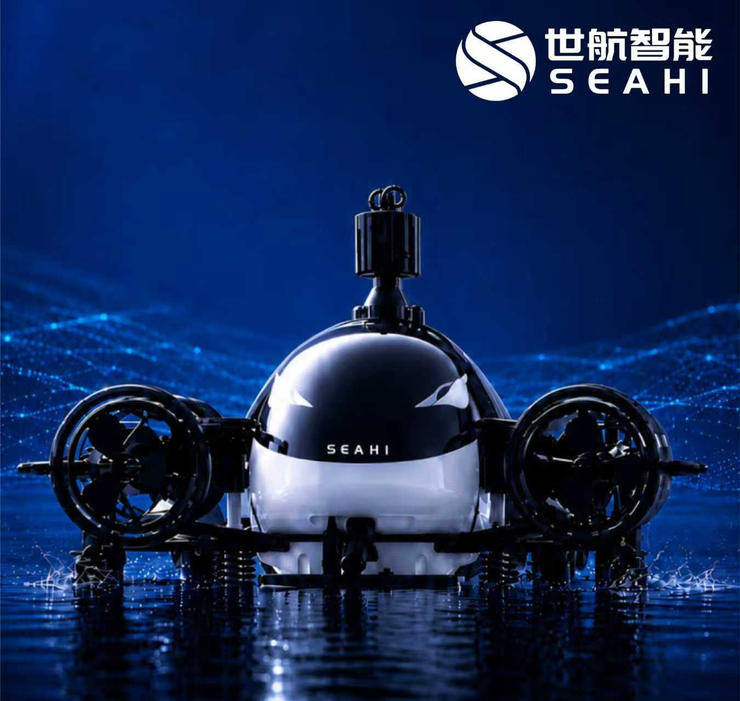

Shihang Intelligence Secures Over RMB 1 Billion in Series A, Topping Global Marine Robotics Funding Round Record
Leiphone (WeChat: Leiphone) reported that on June 15, Shihang Intelligence, a marine embodied intelligence firm, announced the closing of over RMB 1 billion in Series A funding — the largest single financing round in the global marine robotics industry to date.
New participants in the round comprise Shanghe Momentum Fund, Vertex Growth (a Temasek portfolio company), CITIC Group's Agriculture Industry Fund, Yuzun Capital, and publicly listed Broad Ocean Motor. All prior backers — GSR Ventures, Vertex China, Huaying Capital, Changshi Capital, among others — elected to substantially upsize their stakes. Proceeds are earmarked for core technology R&D, global market expansion, and industrial ecosystem buildout, accelerating the scaled deployment of marine robots in complex underwater environments.
Chen Xiaobo, founder and CEO of Shihang Intelligence, is a 1989-born alumnus of Harbin Engineering University with 19 years of specialization in marine robotics. At 28, he was awarded the First Prize of the National Defense Science and Technology Progress Award — one of the youngest ever to receive the honor — and previously spearheaded the development of China's first commercial underwater cleaning robot.

On the technology front, Shihang Intelligence unveiled its marine embodied large model "Cangqiong CEORION" in April. Unlike conventional underwater robots tethered to manual remote control or pre-programmed instructions, the model employs a unified end-to-end architecture that fuses environmental perception, task comprehension, and motion generation. Trained on millions of hours of commercial operation data — both real and simulated — it constructs a marine world model. Robots powered by this model are capable of 12 underwater task categories, including inspection, cleaning, grasping, and welding. In simulation, task success and precision-controlled grasping rates each exceeded 90%, matching professional diver-level performance. Zero-shot environmental adaptability surpassed 70%, and an embedded physical reasoning module reduced collision incidents by 80%. Autonomous task execution remains viable under weak or absent communication conditions.
To contend with extreme marine conditions, Shihang Intelligence has in-house developed six core systems — propulsion, control, sensing, navigation, sealing, and deployment-and-recovery — all backed by wholly owned intellectual property. Its products deliver full-depth (0–10,000 m) and full-degree-of-freedom operational capability, and remain the only commercially deployed solution validated for stable performance across all ocean depths in real-world marine environments.
On the commercial front, Shihang Intelligence's robots have achieved scaled deployment in ship hull cleaning, offshore wind and solar energy, marine aquaculture, and seabed exploration. Order volume in the first half of 2026 exceeded RMB 1 billion. This year, Shihang led the formulation of China's inaugural "Operational Procedures for Underwater Cleaning Robots," received the 2025 First Prize of the Science and Technology Progress Award from the China Institute of Navigation, and was named the sole Chinese company admitted to the Maritime and Port Authority of Singapore's national underwater hull inspection and cleaning program — a milestone entrance into the top-tier global maritime ecosystem.
Multiple investors noted that marine embodied intelligence is a hard-tech arena with formidably high entry barriers. Armed with full-stack technical capabilities and a proven commercial closed loop in real-world environments, Shihang Intelligence has established itself as the global benchmark in marine embodied intelligence — poised to redefine the paradigm for marine operations worldwide.